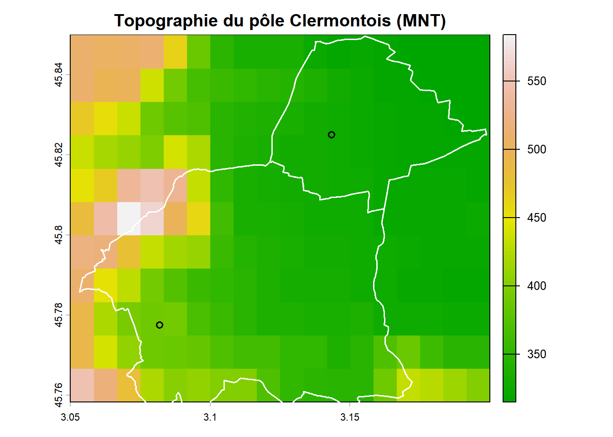
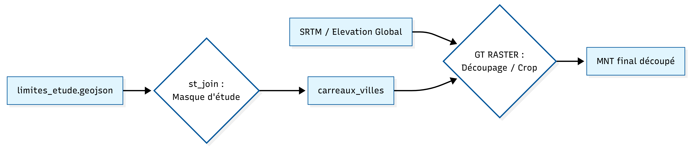
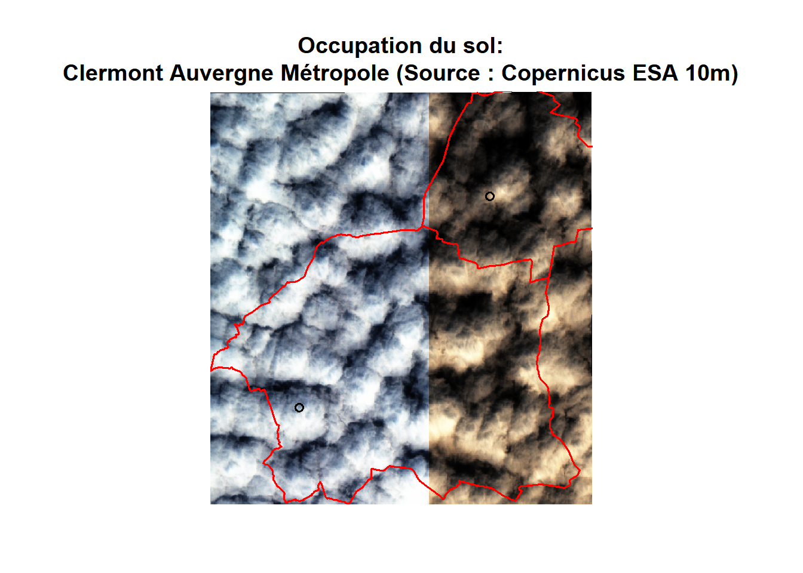
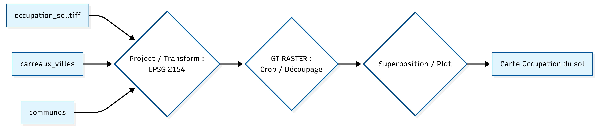

## I: L’interface géomorphologique: un facteur de
l’étalement urbain
L’étude de l’altitude ne relève pas seulement de la simple observation paysagère, elle constitue la matrice sur laquelle se calquent les inégalités sociales. En géographie urbaine, la pente est souvent synonyme de valeur foncière élevée (vues dégagées, air “plus sain”) ou à l’inverse, d’enclavement. Les données utilisées ici sont issues d’un Modèle Numérique de Terrain (MNT) haute résolution, permettant de mesurer avec précision les variations d’altitude du pôle clermontois.
library(readr)
library(sf)
if (file.exists("donnees_revenues.csv")) {
Filosofi_carreaux_Puy_de_Dome <- read_csv2("donnees_revenues.csv")
} else {
stop("Le fichier donnees_revenus.csv est introuvable dans le dossier du Rmd !")
}
if (file.exists("carreaux_200m.geojson")) {
carreaux <- st_read("carreaux_200m.geojson", quiet = TRUE)
}library(terra)
library(geodata)
library(sf)
communes <- st_read("limites_etude.geojson", quiet = TRUE)
carreaux_complets <- st_read("limites_etude.geojson", quiet = TRUE)
carreaux_villes <- st_join(carreaux_complets, communes, join = st_intersects)
alt_fine <- elevation_global(res=0.5, path="data")
clermont_alt_fine <- crop(alt_fine, ext(carreaux_villes))
plot(clermont_alt_fine,
main="Topographie du pôle Clermontois (MNT)",
col=terrain.colors(100))
plot(st_geometry(communes), add=TRUE, border="white", lwd=1.5)
Le relief apparaît comme étant le premier facteur structurel de la métropole clermontoise. Ce MNT met en évidence une interface géomorphologique majeure : le contact entre le fossé d’effondrement de la Limagne (zone plane et fertile) et le socle cristallin de la Chaîne des Puys.
On constate que l’urbanisation clermontoise ne s’est pas faite de manière circulaire, mais selon un gradient d’altitude asymétrique. À l’Ouest, la ville se heurte à des ruptures de pente qui ont historiquement limité l’étalement urbain,forçant une densification verticale et créant des quartiers résidentiels “perchés” très prisés. À l’inverse, vers l’Est (en direction de Gerzat), l’absence de contrainte physique a favorisé une extension horizontale massive. Ce plat pays a permis l’implantation de vastes infrastructures (zones industrielles, autoroutes, centres logistiques) qui agissent aujourd’hui comme des barrières sociales et sonores, contrastant avec le cadre de vie des hauteurs.
Schéma de géotraitement : de la Topographie du pôle Clermontois

=> Pour dépasser les limites administratives parfois trompeuses, nous avons croisé les données satellitaires de Copernicus avec notre maillage de population. L’objectif était de confronter la “ville de droit” (les limites communales) à la “ville de fait” (le bâti réel et la densité).
library(terra)
library(sf)
lc_brut <- rast("occupation_sol.tiff")
lc_repro <- project(lc_brut, "EPSG:2154")
carreaux_sf <- st_transform(carreaux_villes, 2154)
communes_sf <- st_transform(communes, 2154)
clermont_lc <- crop(lc_repro, ext(carreaux_sf))
par(mar = c(3, 1, 4, 1))
plot(clermont_lc,
main = "Occupation du sol:\nClermont Auvergne Métropole (Source : Copernicus ESA 10m)",
stretch = "hist",
col = map.pal("magma", 50),
axes = FALSE,
mar = c(3, 1, 4, 1))
plot(st_geometry(carreaux_sf), add = TRUE, border = "pink", lwd = 0.3)
plot(st_geometry(communes_sf), add = TRUE, border = "red", lwd = 1.8)
La superposition des données révèle des corrélations morpho-sociales nettes. Le pôle minéralisé (gris/blanc), coïncide avec les carreaux de population les plus denses. On y observe une continuité du bâti qui ignore les frontières entre communes, matérialisant l’agglomération réelle. Cette zone de forte réflectance correspond souvent aux quartiers où la mixité sociale est la plus complexe à gérer du fait de la densité.
Les “vides” apparents (zones sombres/marrons), bien que situés à l’intérieur des limites administratives (en rouge), sont des espaces dépourvus de population (absence de carreaux roses). Ces “vides” révèlent des “coupures vertes” et des zones de transition agricole.
Malgré la pression urbaine, on observe encore une “zone tampon” non-bâtie. Cette discontinuité physique explique en partie la persistance de profils socio-économiques distincts entre les deux communes : elles ne sont pas encore totalement “soudées” par le bâti, ce qui maintient une certaine autonomie de leurs marchés immobiliers respectifs.
En somme, cette approche permet de voir que la ville ne s’arrête pas à ses panneaux d’entrée, mais là où le pixel change de nature. Elle confirme que l’organisation spatiale du pôle clermontois est le fruit d’une lutte constante entre la topographie et la volonté d’extension urbaine.
Schéma de géotraitement : de l’Occupation du sol
